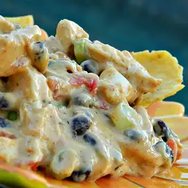

Outrageous Warm Chicken Nacho Dip

Description
This is my jazzed up version of classic queso dip taken to a heartier level, perfect for football games, tailgating or for taking along to pot lucks in a slow cooker! This is a serious crowd-pleaser that is served hot as a dip, spooned over crisp tortilla chips nacho-style, or rolled up in a warm flour tortilla! The heat can be turned up or down with the addition of jalapenos to taste.
Ingredients
- 1 (14 ounce) can diced tomatoes with green chile peppers (such as RO*TEL®), drained
- 1 (1 pound) loaf processed cheese food (such as Velveeta®), cubed
- 2 large cooked skinless, boneless chicken breast halves, shredded
- ⅓ cup sour cream
- ¼ cup diced green onion
- 1½ tablespoons taco seasoning mix
- 2 tablespoons minced jalapeno pepper, or to taste (Optional)
- 1 cup black beans, rinsed and drained
Steps
- Place the diced tomatoes, processed cheese, chicken meat, sour cream, green onion, taco seasoning, and jalapeno pepper into a slow cooker. Cook on High, stirring occasionally until the cheese has melted and the dip is hot, 1 to 2 hours. Stir in the black beans, and cook 15 more minutes to reheat.